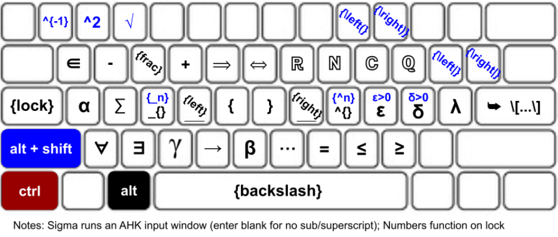

-
Research in Graph Theory & Combinatorics
▶ Details
March 2026 - Present
Throughout the spring and summer of 2026, I have conducted
research in graph theory and combinatorics, primarily in
Ramsey Theory
and edge-coloring problems. I undertook this project after
interviewing
Dr. Alexander Halperin, who introduced me to the n-tuple vertex graph operation from
work by a team at the 2024 Salisbury EXERCISE REU
. I have found results on this operation’s regularity and
invertibility, and
my abstract
was selected for presentation at the
2027 Joint Mathematics Meetings.
-
{Backslash}: LaTeX keyboard for mathematicians
▶ Details
August 2026 - Present
Throughout the fall of 2026, I have developed an open-source
keyboard remapping for LaTeX through
AutoHotKey v2. The keyboard works by holding down the alt-key to change the
input as seen here. It has
been rigorously tested through personal use, and is fully
customizeable with a rudimentary understanding of AutoHotKey
syntax. Installation and full documentation is hosted
here.

-
Summer Opportunity for Academic Research, Virtual
Scholarly Program, Emory University
▶ Details
June - August 2026
In the summer after my first year, I was selected to participate
in the
Summer Opportunity for Academic Research Virtual Scholarly
Program
with the
Laney Graduate School of Emory University. I attended weekly seminars and worked on various projects to
develop my skills as a researcher, while also exploring special
topics under Emory graduate students. For one project, I created
and presented a literature review for a hypothetical paper on
coding theory, drawing from personal study and interviews I’d held
with faculty at various universities.
-
Directed Reading Program,
Knot Theory
▶ Details
January - May 2026
In my second semester I studied in UVA’s
Directed Reading Program in Mathematics
under
Adam Friedman-Brown, a graduate student studying topology. We read Colin Adams’s
The Knot Book, meeting weekly to discuss. At the end of this semester I gave a
talk on knot theory to the Math Department; my presentation can be seen here.
-
Math Experimental Lab, Discrete Dynamical Systems
▶ Details
September - December 2025
In my first semester I participated in UVA’s Math Experimental Lab
on discrete dynamical systems under
Dr. Oliver Wang. In our weekly meetings we studied point behaviors for iterated
functions in real and complex variables, culminating in the
construction of the
Mandelbrot Set
and
some other interesting dynamical graphs. At the end of the semester we presented to the department, and
I received a grade of A for my work.